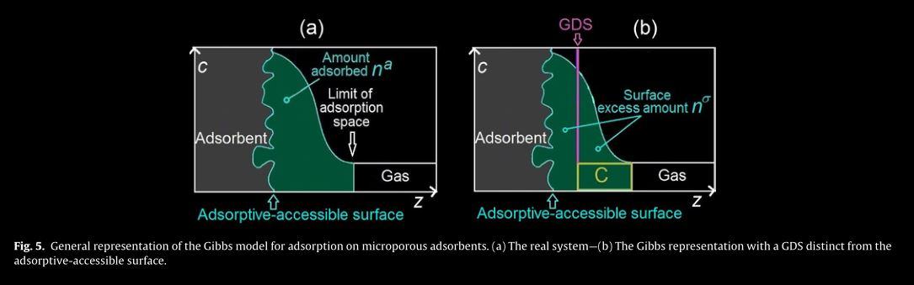
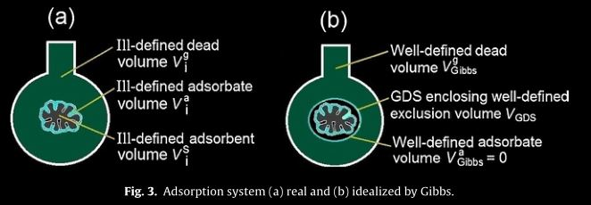
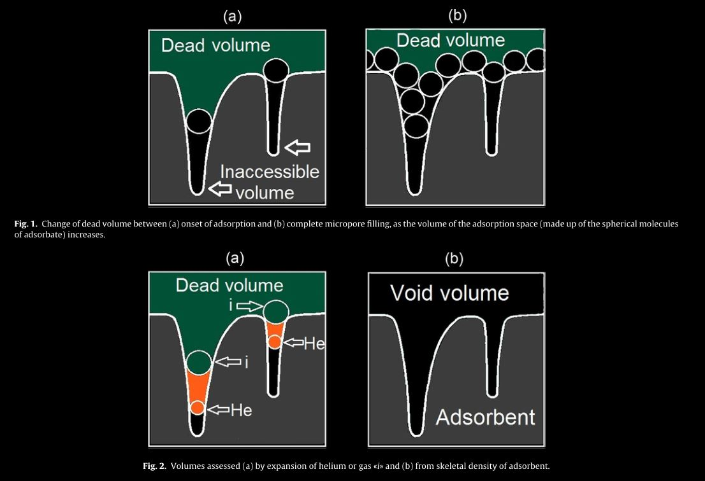
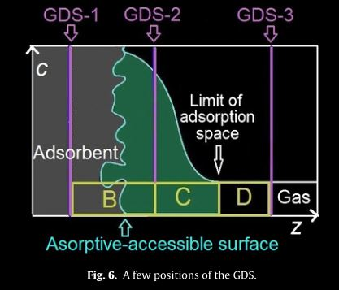
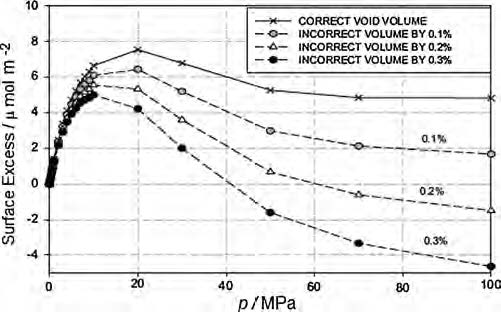

Surface Excess Adsorption
Table of Contents
1 Definitions
2 Gibbs Dividing Surface
- the Gibbs Dividing Surface (GDS) is an arbirtary geometrical surface close to the adsorbing surface, with a precisely determined position
- it is assumed that adsorption takes place on the GDS
 Rouquerol2016
2.1 Gibbs Exclusion Volume
- Gibbs Exclusion Volume \(V_{GDS}\) is the volume excluded by the GDS Rouquerol2016
- by declaring such a variable, it is possible to exclude the uncertainties posed by void volume calculations from the surface excess amount
- but this also means that the Gibbs Exclusion Volume must be reported along with the surface excess for it to be comparable
2.2 Choice of the GDS
- due to practical limitations are limited to the following Rouquerol2016
- a probe-determined \(V_{GDS}\) close to the adsorbent specific volume \(V _i ^s\) for vapour adsorption below 1 bar
- an arbirtray \(V_{GDS}\) of 0.5 cm3/g, which is close enough to the specific volume of many adsorbents
- \(V_{GDS}\) of 0, yeilds net adsorption, particularly useful for evaluating gas storage
- 
3 Specific Volume of the Sample
- dead volume is the volume available to the gas phase Rouquerol2016
- \(V _i ^g = V - ( V _i ^S + V _i ^a)\)
- V is the sum of the volume of the empty adsorption bulb + the dosing volume up to the membrane of the pressure transducer
- \(V _i ^S\) is the adsorbent volume inaccessible to the molecules of the adsorptive i - the solid volume
- \(V _i ^a\) is the volume of the adsorption space for the adsorptive i - the adsoptive volume
- the usual method of void volume characterization is based on gas expansion using Helium, which is assumed to inert
- it is now well known that He is, however, prone, to adsorption in micropores, leading to disproprtionately large void volumes and disproportionately small values for adsorption Rouquerol2016
- He absorption might also be appreciable for shales, especially at moisture equilibrated conditions
- this effect maybe minimized by measuring dead volume at higher temperatures Rouquerol2016
- due to their dimensions, some of these pores might be inaccessible to larger adsorptive molecules.
- these shortcomings can be in principle avoided by calculating void volume through gas expansion of the adsorptive molecules at a tempreature where adsorption is negligible, but this is not always practically possible Rouquerol2016
- in simulations, the dead volume is calculated using an r-distance surface, the volume limited by the probe-accessible surface - the connolly surface for spherical probes Rouquerol2016
- 
4 Adsorption Space
- adsorption space is \(V _i ^a\) defined as the region in which the concentration of the adsorptive is higher compared to the bulk region or the gas phase Rouquerol2016
- for the sake of simplicity, the adsorption space is often taken as 0 Rouquerol2016
- adsorbed phase volume, \(V _i ^a\) can either Rouquerol2016
- be assumed to be equal to the micropore volume - with increasing density with loading, or
- be assumed to have a constant density and increasing volume with loading
- amount adsorbed is defined as the content of the adsorption space Rouquerol2016
5 Excess Adsorption
- the resulting surface excess amount is given as: Rouquerol2016
- \(n _\sigma = n - c^g (V - V _{GDS})\)
- n is the total adsorptive introduced into the system
- cg is the final experimental concentration of the gas phase
- $V _{GDS} is the gibbs exclusion volume that is decided by the coice of the GDS
- it must be noted that most porous solids do not have a well defined adospriton surface, and hence the defenition of a Gibbs surface excess is not valid in most cases; however the concept of a surface excess amount can be an useful intermediate step in calculating amount adsorbed.
- in adsorbates containing micropores less than 2 nm, dead volume of the gas phase is not very easy to measure.
- a straight line or plane assumed to be the GDS cannot conicde with the more complex shape of the adsorptive-accessibe surface of the adsorbent.
- it can be seen that for different arbitrary GDS positions, the excess adsorbed, \(n _{\sigma}\), calculated varies accordingly
- the space represented by the yellow rectangle is the portion of gas counted as gas
- where \(n^a\) is the absolute adsorption
- \(n ^{\sigma} = n^a - n^c - n^b\) for GDS-1
- \(n ^{\sigma} = n^a - n^c\) for GDS-2
- \(n ^{\sigma} = n^a + n^d\) for GDS-3
- 
- Rouquerol2016
- 
- Do2010
- \(n _\sigma = n - c^g (V - V _{GDS})\)
6 Net Adsorption
- net adsorption is calculated from a \(V_{GDS}\) of 0 Rouquerol2016
7 Absolute Adsorption
- calculation of absolute adsorption requires knowledge of Rouquerol2016
- \(V_{GDS}\) used to calculate \(n ^{\sigma}\)
- gas law used the calculation of \(n ^{\sigma}\) to derive \(c ^g\)
- specific inaccessible volume of the adsorbent \(V _i ^s\)
- actual volume of the adsorbate \(V _i ^a\)
- \[n ^a = n ^{\sigma} + c ^g V ^a + c ^g ( V _i ^S - V _{GDS} )\] Rouquerol2016
7.1 Adsorbed Phase Volume / Density Correction Term
- \(c ^g V ^a\)
- second term in the equation for absolute adsorption corrects the assumption of 0 adsorption volume in the Gibbs approach
- for sub-critical adsorption below 1 bar this term might be ignored
- but this term becomes significant for adsorption above 10 bars and for super-critical adsorption
7.2 Void Volume Correction Term
- \(c ^g ( V _i ^S - V _{GDS} )\)
- thrid term accounts for the fact that GDS does not coincide with the adsorbing surface accessible to the adsorbate
- can be ignored for low pressures due to low values fo \(c ^g\)
- for high pressure adsorption, due to an increased value of \(c ^g\), small errors in \(V _i ^s\) and \(V _i ^a\) lead to a significant error in amount adsorbed
- for vapour adsorption at low pressures, below 1 bar, the difference between excess and absolute adsopriton is negligible.
8 Equations of State
- the choice of equation of state, greatly affects calculated adsorption values
- whilst conventional equations such as Peng-Robinson and Redlich-Kwong are widely used, more precise EoS specific for individual gases have been proposed in the recent years.
- it is challenging to find an EoS that adequately describes adsorption at near critical regions Siemons2007
9 Saturation Vapour Pressure
- saturation Vapour Pressure has been obtained through
- a plot of log(vapour pressure) vs 1/T Clarkson1997
- from Chemical Engineering data books Lide2003
- from reduced Kirchoff equation Kapoor1989
- \(P _s = P _c * exp[ \frac{T _{nbp}}{T _c} (\frac{ln P _c}{1 - T _{nbp}/T _c})(1 - \frac{T _c}{T}) ]\)
- Clarkson1997 found that pseudo vapour pressures obtained from CRC handbook and Kirchoff equation provided the best results.
10 Gravimetric Adsorption
- in gravimetric measurements, the effect of weight increase due to adsorption is reduced due to bouyancy, proportional to gas density \(\rho _i ^g\) Rouquerol2016
- excess adsorbed is given as:
- \(n ^{\sigma} = \frac{\Delta m + \Delta \rho _i ^g (V _{GDS} + V ^B)}{M_i}\)
- for gravimetric measurements, \(c ^g\) can be replaced by \(\rho _i ^g\) / Mi$
- \(\Delta m\) is the measured mass change
- \(\rho _i ^g\) is the gas phase density
- \(V _{GDS}\) is the Gibbs exclusion volume
- \(V ^B\) is the volume of the gas phase
- \(M _i\) is the molar mass of the adsorptive
- \(n ^{\sigma} = \frac{\Delta m + \Delta \rho _i ^g (V _{GDS} + V ^B)}{M_i}\)
- absolute adsorbed is given as
- \(n ^a = n ^{\sigma} + (\frac{\Delta \rho _i ^g}{M _i}) V _i ^a + (\frac{\Delta \rho _i ^g}{M _i})*(V _i ^s - V_{GDS})\)
- \(V _i ^a\) is the volume of the adsorbed phase
- \(n ^a = n ^{\sigma} + (\frac{\Delta \rho _i ^g}{M _i}) V _i ^a + (\frac{\Delta \rho _i ^g}{M _i})*(V _i ^s - V_{GDS})\)